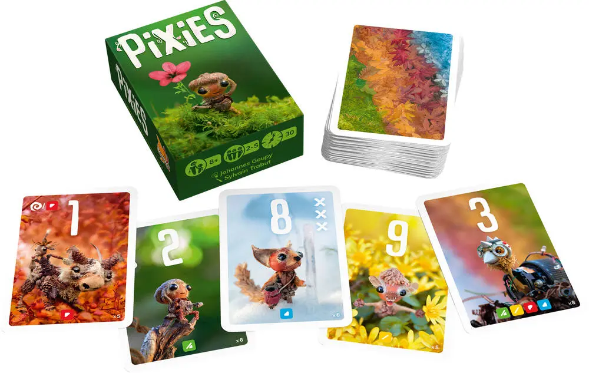
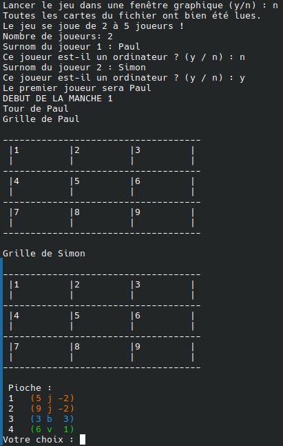
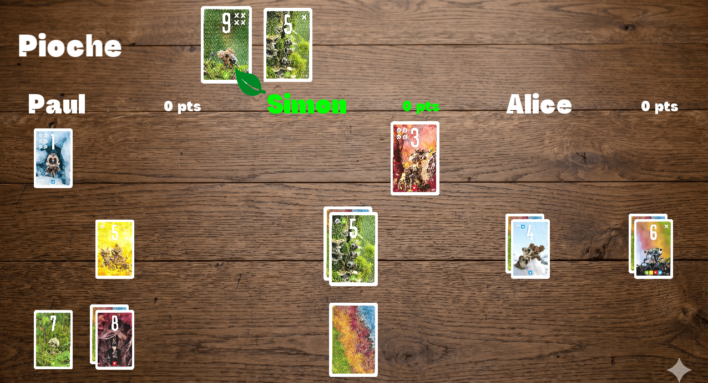

Le sujet
A la fin de notre première année en Double Licence Mathématiques Informatique, il nous a été demandé de reproduire le jeu de cartes Pixies en C++ et de faire une “IA” capable de jouer toute seule.
Sur une période de 5 semaines et accompagné d’un professeur, nous avons tous, par groupe de 2, utilisés nos compétences acquises au cours de l’année en algorithmique, python et développement web pour fournir le résultat le plus satisfaisant.
Cela nous a aussi permis de dévouvrir des bibliothèques comme SFML, ou encore des moyens de travail collaboratif comme Git.
Une image du jeu Pixies

Le résultat
Notre travail est terminé et le résultat est accessible pour tout le monde sur github.com en suivant ce lien.
Vous n'aurez qu'à suivre les consignes du README pour pouvoir jouer au jeu.
Des images de notre travail.

